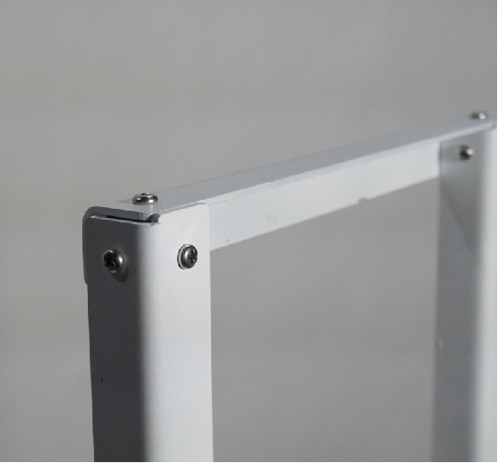
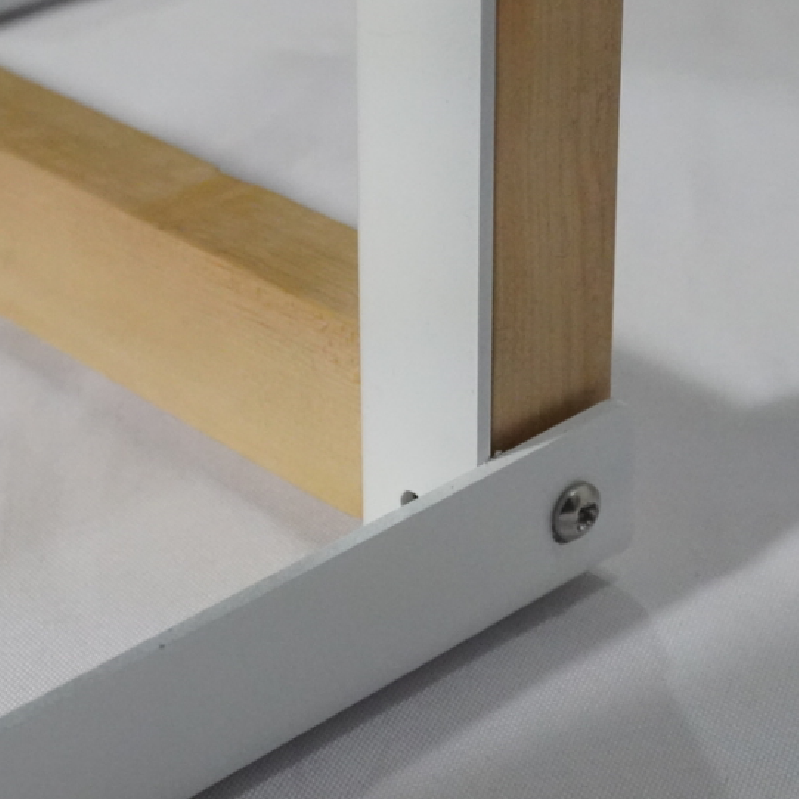
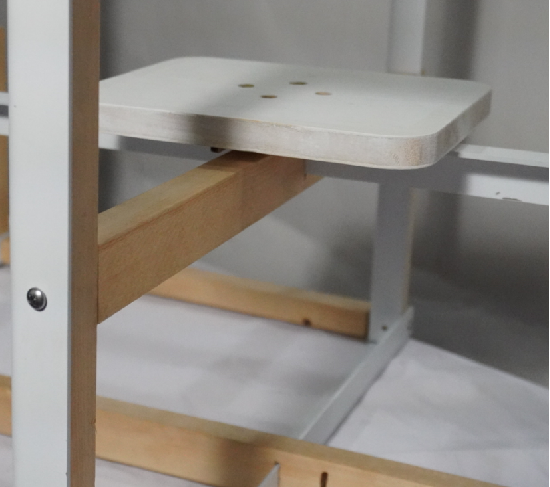

111Deng




一一一凳选用宜家的格里姆斯布床架与木方，通过切割和拼接，制作出可让用户多方式安装的，一套组件有多种版本的，每个版本也有多种坐立方式的“架子”+“活动座面”的板凳组，以表达不事先预设行为方式，强调自由探索的黑客精神。
1 1 1 Deng is made of IKEA’s GRIMSBU bedstead and wooden square. Through cutting and splicing, it can be installed in many ways. There are many versions of a set of components, and each version also has a variety of "shelf" and "movable seat surface" for sitting and standing. It can express the hacker spirit of free exploration without preset behavior.